6.8 Linker Rand, Blüten und die DK-Grammatik (nicht im Sommer 2026)./course1/wly/06/08-linker-Rand-und-Bluete.wly:2:11
6.8 Linker Rand, Blüten und die DK-Grammatik (nicht im Sommer 2026)./course1/wly/06/08-linker-Rand-und-Bluete.wly:2:11
In diesem Teilkapitel werden wir sehen, wie wir für eine./course1/wly/06/08-linker-Rand-und-Bluete.wly:4:5 gültige Wortform ./course1/wly/06/08-linker-Rand-und-Bluete.wly:5:5$\gamma$./course1/wly/06/08-linker-Rand-und-Bluete.wly:5:22 den korrekten./course1/wly/06/08-linker-Rand-und-Bluete.wly:5:30 Linksreduktionsschritt./course1/wly/06/08-linker-Rand-und-Bluete.wly:6:5
finden. Als erstes müssen wir uns überlegen, wie die Front./course1/wly/06/08-linker-Rand-und-Bluete.wly:12:5 ./course1/wly/06/08-linker-Rand-und-Bluete.wly:13:5$\front(\gamma) = \alpha \beta$./course1/wly/06/08-linker-Rand-und-Bluete.wly:13:5 überhaupt aussehen kann../course1/wly/06/08-linker-Rand-und-Bluete.wly:13:36 Wenn wir uns den Ableitungsbaum von ./course1/wly/06/08-linker-Rand-und-Bluete.wly:14:5$\gamma$./course1/wly/06/08-linker-Rand-und-Bluete.wly:14:41 ansehen, wird./course1/wly/06/08-linker-Rand-und-Bluete.wly:14:49 das einigermaßen offensichtlich sein. Zur Erinnerung: Zu./course1/wly/06/08-linker-Rand-und-Bluete.wly:15:5 jeder Ableitung ./course1/wly/06/08-linker-Rand-und-Bluete.wly:16:5$S \Step{}^* w \in \Sigma^*$./course1/wly/06/08-linker-Rand-und-Bluete.wly:16:21 können wir./course1/wly/06/08-linker-Rand-und-Bluete.wly:16:49 eindeutig einen ./course1/wly/06/08-linker-Rand-und-Bluete.wly:17:5Ableitungsbaum./course1/wly/06/08-linker-Rand-und-Bluete.wly:17:22 zeichnen. Wenn die./course1/wly/06/08-linker-Rand-und-Bluete.wly:17:37 Grammatik eindeutig ist, so hängt auch der Baum nur vom./course1/wly/06/08-linker-Rand-und-Bluete.wly:18:5 Wort ./course1/wly/06/08-linker-Rand-und-Bluete.wly:19:5$w \in L(G)$./course1/wly/06/08-linker-Rand-und-Bluete.wly:19:10 ab und nicht von der Ableitung./course1/wly/06/08-linker-Rand-und-Bluete.wly:19:22 ./course1/wly/06/08-linker-Rand-und-Bluete.wly:20:5$S \Step{}^* w$./course1/wly/06/08-linker-Rand-und-Bluete.wly:20:5../course1/wly/06/08-linker-Rand-und-Bluete.wly:20:20 Allerdings können wir für Zwischenformen./course1/wly/06/08-linker-Rand-und-Bluete.wly:20:20 ./course1/wly/06/08-linker-Rand-und-Bluete.wly:21:5$S \Step{}^* \gamma \Step{}^* w$./course1/wly/06/08-linker-Rand-und-Bluete.wly:21:5 auch einen Ableitungsbaum./course1/wly/06/08-linker-Rand-und-Bluete.wly:21:37 zeichnen, und der unterscheidet sich stark, abhängig davon,./course1/wly/06/08-linker-Rand-und-Bluete.wly:22:5 ob ./course1/wly/06/08-linker-Rand-und-Bluete.wly:23:5$S \Step{}^* \gamma$./course1/wly/06/08-linker-Rand-und-Bluete.wly:23:8 eine Rechtsableitung,./course1/wly/06/08-linker-Rand-und-Bluete.wly:23:28 Linksableitung oder sonst was ist. Ich zeige Ihnen jetzt./course1/wly/06/08-linker-Rand-und-Bluete.wly:24:5 ein Beispiel für eine Grammatik und eine Handvoll./course1/wly/06/08-linker-Rand-und-Bluete.wly:25:5 Ableitungen samt Ableitungsbaum../course1/wly/06/08-linker-Rand-und-Bluete.wly:26:5
Es ist zu diesem Zeitpunkt irrelevant, ob ./course1/wly/06/08-linker-Rand-und-Bluete.wly:35:5$G$./course1/wly/06/08-linker-Rand-und-Bluete.wly:35:47 eindeutig./course1/wly/06/08-linker-Rand-und-Bluete.wly:35:50 oder sogar ./course1/wly/06/08-linker-Rand-und-Bluete.wly:36:5$LR(0)$./course1/wly/06/08-linker-Rand-und-Bluete.wly:36:16 ist. Ich interessiere mich gerade nur./course1/wly/06/08-linker-Rand-und-Bluete.wly:36:23 für Ableitungsbäume von Wortformen../course1/wly/06/08-linker-Rand-und-Bluete.wly:37:5
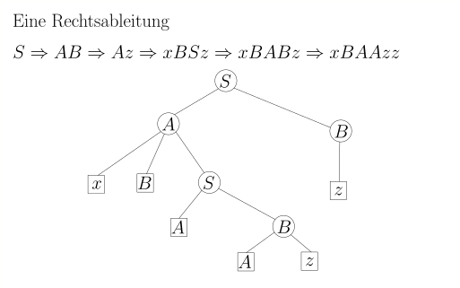
course1/public/img/context-free/LR/G-right-derivation.svg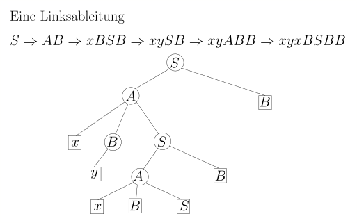
course1/public/img/context-free/LR/G-left-derivation.svg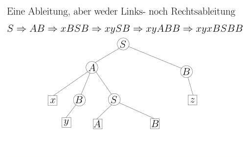
course1/public/img/context-free/LR/G-messy-derivation.svgFällt Ihnen etwas auf? Schauen Sie sich bitte noch ein./course1/wly/06/08-linker-Rand-und-Bluete.wly:44:5 weiteres Beispiel an für den Ableitungsbaum einer in einer./course1/wly/06/08-linker-Rand-und-Bluete.wly:45:5 gültigen Wortform, also von einer, die in einer./course1/wly/06/08-linker-Rand-und-Bluete.wly:46:5 Rechtsableitung vorkommen kann:./course1/wly/06/08-linker-Rand-und-Bluete.wly:47:5
Warten Sie! Scrollen Sie erst weiter, wenn Sie den Baum oben lang./course1/wly/06/08-linker-Rand-und-Bluete.wly:56:9 genug angeschaut haben! Versuchen Sie selbst, die spezielle./course1/wly/06/08-linker-Rand-und-Bluete.wly:57:9 Form dieses Baumes möglichst formal zu beschreiben!./course1/wly/06/08-linker-Rand-und-Bluete.wly:58:9
Auflösung. Hier sehen Sie noch einmal den gleichen Baum, nun aber./course1/wly/06/08-linker-Rand-und-Bluete.wly:62:9 gewisse Teile verschieden umrandet / eingefärbt../course1/wly/06/08-linker-Rand-und-Bluete.wly:63:9
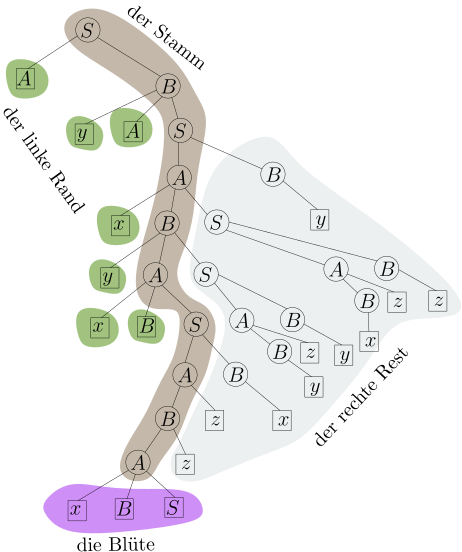
course1/public/img/context-free/LR/G-tree-large-colored.svgSie sehen: links vom Stamm gibt es nur Blätter. Rechts vom./course1/wly/06/08-linker-Rand-und-Bluete.wly:70:5 Stamm ist jedes Blatt ein Terminalsymbol. Wir erkennen./course1/wly/06/08-linker-Rand-und-Bluete.wly:71:5 auch, was der letzte Ableitungsschritt war, der zu diesem./course1/wly/06/08-linker-Rand-und-Bluete.wly:72:5 Baum geführt hat: die Blüte ist hinzugekommen, in diesem./course1/wly/06/08-linker-Rand-und-Bluete.wly:73:5 Fall also ./course1/wly/06/08-linker-Rand-und-Bluete.wly:74:5$A \rightarrow x B S$./course1/wly/06/08-linker-Rand-und-Bluete.wly:74:15../course1/wly/06/08-linker-Rand-und-Bluete.wly:74:36 Wir definieren nun./course1/wly/06/08-linker-Rand-und-Bluete.wly:74:36 eingeführten Begriffe formal:./course1/wly/06/08-linker-Rand-und-Bluete.wly:75:5
Definition / Beobachtung 6.8.1 (Stamm, linker Rand, Blüte, Front, rechter Rest)./course1/wly/06/08-linker-Rand-und-Bluete.wly:77:5 Sei./course1/wly/06/08-linker-Rand-und-Bluete.wly:79:59 ./course1/wly/06/08-linker-Rand-und-Bluete.wly:80:9$S \Step{}^* \gamma$./course1/wly/06/08-linker-Rand-und-Bluete.wly:80:9 eine Rechtsableitung, ./course1/wly/06/08-linker-Rand-und-Bluete.wly:80:29$\gamma$./course1/wly/06/08-linker-Rand-und-Bluete.wly:80:52 also./course1/wly/06/08-linker-Rand-und-Bluete.wly:80:60 eine gültige Wortform, und ./course1/wly/06/08-linker-Rand-und-Bluete.wly:81:9$\mathcal{T}$./course1/wly/06/08-linker-Rand-und-Bluete.wly:81:36 der./course1/wly/06/08-linker-Rand-und-Bluete.wly:81:49 Ableitungsbaum von ./course1/wly/06/08-linker-Rand-und-Bluete.wly:82:9$\gamma$./course1/wly/06/08-linker-Rand-und-Bluete.wly:82:28../course1/wly/06/08-linker-Rand-und-Bluete.wly:82:36 Der ./course1/wly/06/08-linker-Rand-und-Bluete.wly:82:36Stamm./course1/wly/06/08-linker-Rand-und-Bluete.wly:82:43 ist der Pfad von./course1/wly/06/08-linker-Rand-und-Bluete.wly:82:49 der Wurzel zu jenem inneren Knoten ./course1/wly/06/08-linker-Rand-und-Bluete.wly:83:9$u$./course1/wly/06/08-linker-Rand-und-Bluete.wly:83:44,./course1/wly/06/08-linker-Rand-und-Bluete.wly:83:47 der von allen./course1/wly/06/08-linker-Rand-und-Bluete.wly:83:47 inneren Knoten, deren Kinder allesamt Blätter sind, am./course1/wly/06/08-linker-Rand-und-Bluete.wly:84:9 weistesten links steht. Die Kinder von ./course1/wly/06/08-linker-Rand-und-Bluete.wly:85:9$u$./course1/wly/06/08-linker-Rand-und-Bluete.wly:85:48,./course1/wly/06/08-linker-Rand-und-Bluete.wly:85:51 per Definition./course1/wly/06/08-linker-Rand-und-Bluete.wly:85:51 alles Blätter, sind die ./course1/wly/06/08-linker-Rand-und-Bluete.wly:86:9Blüte./course1/wly/06/08-linker-Rand-und-Bluete.wly:86:34../course1/wly/06/08-linker-Rand-und-Bluete.wly:86:40 Die Menge der Knoten, die./course1/wly/06/08-linker-Rand-und-Bluete.wly:86:40 einen Stammknoten als rechtes Geschwister haben, heißt der./course1/wly/06/08-linker-Rand-und-Bluete.wly:87:9 ./course1/wly/06/08-linker-Rand-und-Bluete.wly:88:9linke Rand./course1/wly/06/08-linker-Rand-und-Bluete.wly:88:10../course1/wly/06/08-linker-Rand-und-Bluete.wly:88:21 Jeder Knoten ./course1/wly/06/08-linker-Rand-und-Bluete.wly:88:21$v$./course1/wly/06/08-linker-Rand-und-Bluete.wly:88:36 im linken Rand muss ein./course1/wly/06/08-linker-Rand-und-Bluete.wly:88:39 Blatt sein, ansonsten stünde er ja weiter links als ./course1/wly/06/08-linker-Rand-und-Bluete.wly:89:9$u$./course1/wly/06/08-linker-Rand-und-Bluete.wly:89:61;./course1/wly/06/08-linker-Rand-und-Bluete.wly:89:64 ./course1/wly/06/08-linker-Rand-und-Bluete.wly:89:64 die Menge der rechten Geschwisterkinder von Stammknoten./course1/wly/06/08-linker-Rand-und-Bluete.wly:90:9 sowie deren Nachkommen heißt der ./course1/wly/06/08-linker-Rand-und-Bluete.wly:91:9rechte Rand./course1/wly/06/08-linker-Rand-und-Bluete.wly:91:43../course1/wly/06/08-linker-Rand-und-Bluete.wly:91:55 Im rechten./course1/wly/06/08-linker-Rand-und-Bluete.wly:91:55 Rest ist jedes Blatt ein Terminalsymbol, ansonsten wäre es./course1/wly/06/08-linker-Rand-und-Bluete.wly:92:9 keine Rechtsableitung. Die Beschriftung der Knoten im./course1/wly/06/08-linker-Rand-und-Bluete.wly:93:9 linken Rand ergibt eine Wortform ./course1/wly/06/08-linker-Rand-und-Bluete.wly:94:9$\alpha$./course1/wly/06/08-linker-Rand-und-Bluete.wly:94:42;./course1/wly/06/08-linker-Rand-und-Bluete.wly:94:50 die Blüte./course1/wly/06/08-linker-Rand-und-Bluete.wly:94:50 ergibt ./course1/wly/06/08-linker-Rand-und-Bluete.wly:95:9$\beta$./course1/wly/06/08-linker-Rand-und-Bluete.wly:95:16../course1/wly/06/08-linker-Rand-und-Bluete.wly:95:23 Die Blätter im rechten Rand sind./course1/wly/06/08-linker-Rand-und-Bluete.wly:95:23 ausschließlich mit Terminalen beschriftet und ergeben ein./course1/wly/06/08-linker-Rand-und-Bluete.wly:96:9 Wort ./course1/wly/06/08-linker-Rand-und-Bluete.wly:97:9$w \in \Sigma^*$./course1/wly/06/08-linker-Rand-und-Bluete.wly:97:14 . Der ganze Baum stellt also eine./course1/wly/06/08-linker-Rand-und-Bluete.wly:97:30 Rechtsableitung./course1/wly/06/08-linker-Rand-und-Bluete.wly:98:9
dar. Die Wortform ./course1/wly/06/08-linker-Rand-und-Bluete.wly:104:9$\alpha\beta$./course1/wly/06/08-linker-Rand-und-Bluete.wly:104:27,./course1/wly/06/08-linker-Rand-und-Bluete.wly:104:40 also linker Rand plus./course1/wly/06/08-linker-Rand-und-Bluete.wly:104:40 Blüte, nennen wir die ./course1/wly/06/08-linker-Rand-und-Bluete.wly:105:9Front./course1/wly/06/08-linker-Rand-und-Bluete.wly:105:32 von ./course1/wly/06/08-linker-Rand-und-Bluete.wly:105:38$\mathcal{T}$./course1/wly/06/08-linker-Rand-und-Bluete.wly:105:43 und./course1/wly/06/08-linker-Rand-und-Bluete.wly:105:56 schreiben sie als ./course1/wly/06/08-linker-Rand-und-Bluete.wly:106:9$\front(\mathcal{T})$./course1/wly/06/08-linker-Rand-und-Bluete.wly:106:27../course1/wly/06/08-linker-Rand-und-Bluete.wly:106:48 Wir sagen auch,./course1/wly/06/08-linker-Rand-und-Bluete.wly:106:48 dass ./course1/wly/06/08-linker-Rand-und-Bluete.wly:107:9$\beta$./course1/wly/06/08-linker-Rand-und-Bluete.wly:107:14 ./course1/wly/06/08-linker-Rand-und-Bluete.wly:107:21eine Blüte von ./course1/wly/06/08-linker-Rand-und-Bluete.wly:107:23$\gamma$./course1/wly/06/08-linker-Rand-und-Bluete.wly:107:38 und ./course1/wly/06/08-linker-Rand-und-Bluete.wly:107:47$\alpha\beta$./course1/wly/06/08-linker-Rand-und-Bluete.wly:107:52 ./course1/wly/06/08-linker-Rand-und-Bluete.wly:107:65 die ./course1/wly/06/08-linker-Rand-und-Bluete.wly:108:9Front./course1/wly/06/08-linker-Rand-und-Bluete.wly:108:14 von ./course1/wly/06/08-linker-Rand-und-Bluete.wly:108:20$\gamma$./course1/wly/06/08-linker-Rand-und-Bluete.wly:108:25 ist, ohne über den Ableitungsbaum./course1/wly/06/08-linker-Rand-und-Bluete.wly:108:33 ./course1/wly/06/08-linker-Rand-und-Bluete.wly:109:9$\mathcal{T}$./course1/wly/06/08-linker-Rand-und-Bluete.wly:109:9 selbst zu reden. Hierbei ist zu beachten,./course1/wly/06/08-linker-Rand-und-Bluete.wly:109:22 dass in einer mehrdeutigen Grammatik eine gültige Wortform./course1/wly/06/08-linker-Rand-und-Bluete.wly:110:9 mehrere Ableitungsbäume und somit mehrere Blüten haben./course1/wly/06/08-linker-Rand-und-Bluete.wly:111:9 kann, die Unterteilung ./course1/wly/06/08-linker-Rand-und-Bluete.wly:112:9$\gamma = \alpha\beta w$./course1/wly/06/08-linker-Rand-und-Bluete.wly:112:32 also nicht./course1/wly/06/08-linker-Rand-und-Bluete.wly:112:56 eindeutig ist. Für eindeutige Grammatiken ist die./course1/wly/06/08-linker-Rand-und-Bluete.wly:113:9 Unterteilung aber eindeutig. Sei weiterhin ./course1/wly/06/08-linker-Rand-und-Bluete.wly:114:9$A$./course1/wly/06/08-linker-Rand-und-Bluete.wly:114:52 die./course1/wly/06/08-linker-Rand-und-Bluete.wly:114:55 Beschriftung des Elternknoten der Blüte (notwenigerweise./course1/wly/06/08-linker-Rand-und-Bluete.wly:115:9 ein Nichtterminal; Terminale haben keine Kinder). Dann ist./course1/wly/06/08-linker-Rand-und-Bluete.wly:116:9 ./course1/wly/06/08-linker-Rand-und-Bluete.wly:117:9$A \rightarrow \beta$./course1/wly/06/08-linker-Rand-und-Bluete.wly:117:9 eine Produktion in der Grammatik und./course1/wly/06/08-linker-Rand-und-Bluete.wly:117:30 ./course1/wly/06/08-linker-Rand-und-Bluete.wly:118:9$\alpha A w$./course1/wly/06/08-linker-Rand-und-Bluete.wly:118:9 eine gültige Wortform; wir erhalten den./course1/wly/06/08-linker-Rand-und-Bluete.wly:118:21 Ableitungsbaum von ./course1/wly/06/08-linker-Rand-und-Bluete.wly:119:9$\alpha A w$./course1/wly/06/08-linker-Rand-und-Bluete.wly:119:28,./course1/wly/06/08-linker-Rand-und-Bluete.wly:119:40 indem wir die Blüte von./course1/wly/06/08-linker-Rand-und-Bluete.wly:119:40 ./course1/wly/06/08-linker-Rand-und-Bluete.wly:120:9$\mathcal{T}$./course1/wly/06/08-linker-Rand-und-Bluete.wly:120:9 entfernen. Wir schließen, dass./course1/wly/06/08-linker-Rand-und-Bluete.wly:120:22
ein korrekter Linksreduktionsschritt ist../course1/wly/06/08-linker-Rand-und-Bluete.wly:126:9
Wir können also, ausgehend von der Wortform ./course1/wly/06/08-linker-Rand-und-Bluete.wly:128:5$\gamma$./course1/wly/06/08-linker-Rand-und-Bluete.wly:128:49,./course1/wly/06/08-linker-Rand-und-Bluete.wly:128:57 eine./course1/wly/06/08-linker-Rand-und-Bluete.wly:128:57 Linksreduktion ./course1/wly/06/08-linker-Rand-und-Bluete.wly:129:5$\gamma \rstep{}^* S$./course1/wly/06/08-linker-Rand-und-Bluete.wly:129:20 finden, indem wir den./course1/wly/06/08-linker-Rand-und-Bluete.wly:129:41 Ableitungsbaum von ./course1/wly/06/08-linker-Rand-und-Bluete.wly:130:5$\gamma$./course1/wly/06/08-linker-Rand-und-Bluete.wly:130:24 zeichnen und immer wieder die./course1/wly/06/08-linker-Rand-und-Bluete.wly:130:32 Blüte abschneiden:./course1/wly/06/08-linker-Rand-und-Bluete.wly:131:5
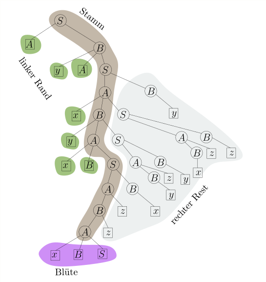
course1/public/img/context-free/LR/tree-destruction/01.svg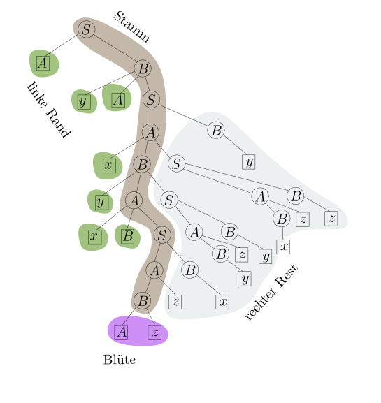
course1/public/img/context-free/LR/tree-destruction/02.svg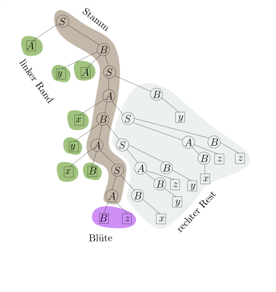
course1/public/img/context-free/LR/tree-destruction/03.svg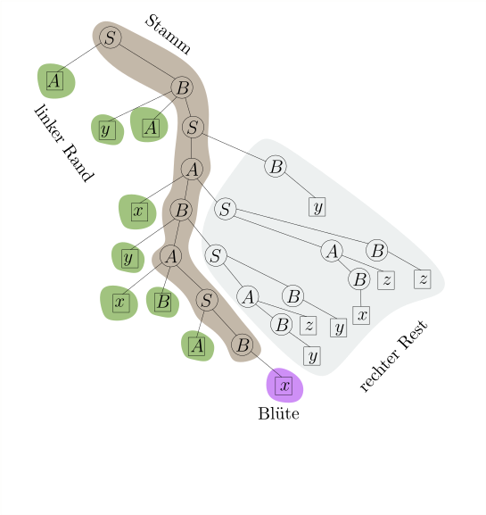
course1/public/img/context-free/LR/tree-destruction/04.svg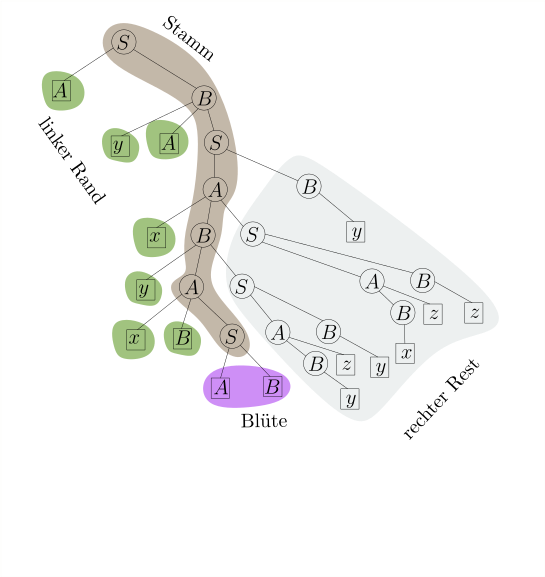
course1/public/img/context-free/LR/tree-destruction/05.svg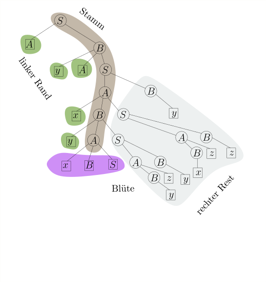
course1/public/img/context-free/LR/tree-destruction/06.svg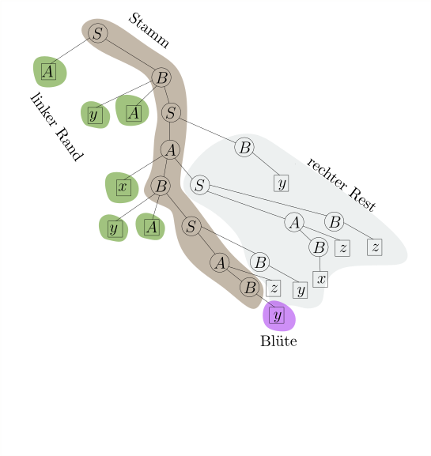
course1/public/img/context-free/LR/tree-destruction/07.svg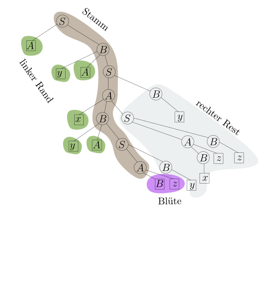
course1/public/img/context-free/LR/tree-destruction/08.svg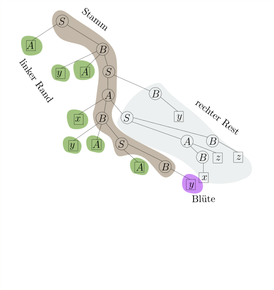
course1/public/img/context-free/LR/tree-destruction/09.svg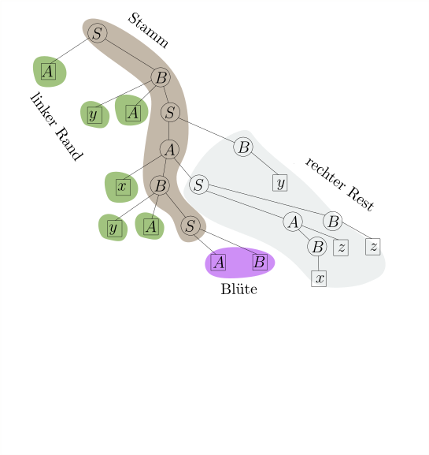
course1/public/img/context-free/LR/tree-destruction/10.svgUm für eine Wortform ./course1/wly/06/08-linker-Rand-und-Bluete.wly:145:5$\gamma$./course1/wly/06/08-linker-Rand-und-Bluete.wly:145:26 den korrekten./course1/wly/06/08-linker-Rand-und-Bluete.wly:145:34 Reduktionsschritt zu finden, reicht es also aus, linken./course1/wly/06/08-linker-Rand-und-Bluete.wly:146:5 Rand und Blüte zu bestimmen, also ./course1/wly/06/08-linker-Rand-und-Bluete.wly:147:5$\alpha$./course1/wly/06/08-linker-Rand-und-Bluete.wly:147:39 und ./course1/wly/06/08-linker-Rand-und-Bluete.wly:147:47$\beta$./course1/wly/06/08-linker-Rand-und-Bluete.wly:147:52,./course1/wly/06/08-linker-Rand-und-Bluete.wly:147:59 so./course1/wly/06/08-linker-Rand-und-Bluete.wly:147:59 dass ./course1/wly/06/08-linker-Rand-und-Bluete.wly:148:5$\gamma = \alpha\beta w$./course1/wly/06/08-linker-Rand-und-Bluete.wly:148:10 und./course1/wly/06/08-linker-Rand-und-Bluete.wly:148:34 ./course1/wly/06/08-linker-Rand-und-Bluete.wly:149:5$\alpha \beta w \rstep{} \alpha A w$./course1/wly/06/08-linker-Rand-und-Bluete.wly:149:5 korrekt ist ( ./course1/wly/06/08-linker-Rand-und-Bluete.wly:149:41$A$./course1/wly/06/08-linker-Rand-und-Bluete.wly:149:56 ./course1/wly/06/08-linker-Rand-und-Bluete.wly:149:59 steht hier für das Nichtterminal, mit dem der Elternknoten./course1/wly/06/08-linker-Rand-und-Bluete.wly:150:5 der Blüte beschriftet ist). Linken Rand und Blüte zu finden./course1/wly/06/08-linker-Rand-und-Bluete.wly:151:5 scheint keine leichte Aufgabe zu sein: schließlich müssen./course1/wly/06/08-linker-Rand-und-Bluete.wly:152:5 wir dafür doch den Ableitungsbaum von ./course1/wly/06/08-linker-Rand-und-Bluete.wly:153:5$\gamma$./course1/wly/06/08-linker-Rand-und-Bluete.wly:153:43 bilden, was./course1/wly/06/08-linker-Rand-und-Bluete.wly:153:51 selbst wieder eine Parsing-Aufgabe ist??? An dieser Stelle./course1/wly/06/08-linker-Rand-und-Bluete.wly:154:5 zeigt sich die Genialität des DK-Ansatzes: der./course1/wly/06/08-linker-Rand-und-Bluete.wly:155:5 Ableitungsbaum von ./course1/wly/06/08-linker-Rand-und-Bluete.wly:156:5$\gamma$./course1/wly/06/08-linker-Rand-und-Bluete.wly:156:24 kann beliebig verschachtelt./course1/wly/06/08-linker-Rand-und-Bluete.wly:156:32 sein, aber Stamm, linker Rand und Blüte haben zusammen eine./course1/wly/06/08-linker-Rand-und-Bluete.wly:157:5 einfache, beinahe linear anmutende Struktur. Schematisch:./course1/wly/06/08-linker-Rand-und-Bluete.wly:158:5
Die Aussage "Stamm, linker Rand und Blüte haben eine./course1/wly/06/08-linker-Rand-und-Bluete.wly:165:5 einfache Struktur" können wir formalisieren../course1/wly/06/08-linker-Rand-und-Bluete.wly:166:5
Definition 6.8.2./course1/wly/06/08-linker-Rand-und-Bluete.wly:168:5 ./course1/wly/06/08-linker-Rand-und-Bluete.wly:168:5 Für eine kontextfreie Grammatik ./course1/wly/06/08-linker-Rand-und-Bluete.wly:169:9$G$./course1/wly/06/08-linker-Rand-und-Bluete.wly:169:41 definieren wir die./course1/wly/06/08-linker-Rand-und-Bluete.wly:169:44 Sprache ./course1/wly/06/08-linker-Rand-und-Bluete.wly:170:9$\Front(G) \subseteq (\Sigma \cup N)^*$./course1/wly/06/08-linker-Rand-und-Bluete.wly:170:17:./course1/wly/06/08-linker-Rand-und-Bluete.wly:170:56
alternativ./course1/wly/06/08-linker-Rand-und-Bluete.wly:178:9
also die Menge aller Wortformen, die Front einer gültigen./course1/wly/06/08-linker-Rand-und-Bluete.wly:185:9 Wortform sind../course1/wly/06/08-linker-Rand-und-Bluete.wly:186:9
Lemma 6.8.3./course1/wly/06/08-linker-Rand-und-Bluete.wly:188:5 ./course1/wly/06/08-linker-Rand-und-Bluete.wly:188:5 Die Sprache ./course1/wly/06/08-linker-Rand-und-Bluete.wly:189:9$\Front(G)$./course1/wly/06/08-linker-Rand-und-Bluete.wly:189:21 ist regulär. Insbesondere gibt es./course1/wly/06/08-linker-Rand-und-Bluete.wly:189:32 eine erweitert reguläre Grammatik ./course1/wly/06/08-linker-Rand-und-Bluete.wly:190:9$\hat{G}$./course1/wly/06/08-linker-Rand-und-Bluete.wly:190:43 für./course1/wly/06/08-linker-Rand-und-Bluete.wly:190:52 ./course1/wly/06/08-linker-Rand-und-Bluete.wly:191:9$\Front(G)$./course1/wly/06/08-linker-Rand-und-Bluete.wly:191:9,./course1/wly/06/08-linker-Rand-und-Bluete.wly:191:20 so dass die Blüte genau die im letzen./course1/wly/06/08-linker-Rand-und-Bluete.wly:191:20 Ableitungsschritt erzeugten Terminalsymbole sind../course1/wly/06/08-linker-Rand-und-Bluete.wly:192:9
Hier ist etwas Mentalgymnastik vonnöten: aus Sicht der./course1/wly/06/08-linker-Rand-und-Bluete.wly:194:5 Sprache ./course1/wly/06/08-linker-Rand-und-Bluete.wly:195:5$\Front(G)$./course1/wly/06/08-linker-Rand-und-Bluete.wly:195:13 sind ./course1/wly/06/08-linker-Rand-und-Bluete.wly:195:24$\Sigma \cup N$./course1/wly/06/08-linker-Rand-und-Bluete.wly:195:30 ./course1/wly/06/08-linker-Rand-und-Bluete.wly:195:45 ./course1/wly/06/08-linker-Rand-und-Bluete.wly:196:5Terminalsymbole./course1/wly/06/08-linker-Rand-und-Bluete.wly:196:6../course1/wly/06/08-linker-Rand-und-Bluete.wly:196:22 Sie können ja schließlich in den Wörtern./course1/wly/06/08-linker-Rand-und-Bluete.wly:196:22 der Sprache auftauchen. Die Grammatik ./course1/wly/06/08-linker-Rand-und-Bluete.wly:197:5$\hat{G}$./course1/wly/06/08-linker-Rand-und-Bluete.wly:197:43 hat also./course1/wly/06/08-linker-Rand-und-Bluete.wly:197:52 die Terminalsymbole ./course1/wly/06/08-linker-Rand-und-Bluete.wly:198:5$\Sigma \cup N$./course1/wly/06/08-linker-Rand-und-Bluete.wly:198:25../course1/wly/06/08-linker-Rand-und-Bluete.wly:198:40 Darüberhinaus hat sie./course1/wly/06/08-linker-Rand-und-Bluete.wly:198:40 die Nichtterminale ./course1/wly/06/08-linker-Rand-und-Bluete.wly:199:5$\hat{N} := \{ \hat{X} \ | \ X \in N\}$./course1/wly/06/08-linker-Rand-und-Bluete.wly:199:24,./course1/wly/06/08-linker-Rand-und-Bluete.wly:199:63 ./course1/wly/06/08-linker-Rand-und-Bluete.wly:199:63 also für jedes Nichtterminal ./course1/wly/06/08-linker-Rand-und-Bluete.wly:200:5$X$./course1/wly/06/08-linker-Rand-und-Bluete.wly:200:34 von ./course1/wly/06/08-linker-Rand-und-Bluete.wly:200:37$G$./course1/wly/06/08-linker-Rand-und-Bluete.wly:200:42 ein./course1/wly/06/08-linker-Rand-und-Bluete.wly:200:45 Meta-Nichtterminal ./course1/wly/06/08-linker-Rand-und-Bluete.wly:201:5$\hat{X}$./course1/wly/06/08-linker-Rand-und-Bluete.wly:201:24../course1/wly/06/08-linker-Rand-und-Bluete.wly:201:33 Das ./course1/wly/06/08-linker-Rand-und-Bluete.wly:201:33$X \in N$./course1/wly/06/08-linker-Rand-und-Bluete.wly:201:39 entspricht dem./course1/wly/06/08-linker-Rand-und-Bluete.wly:201:48 ./course1/wly/06/08-linker-Rand-und-Bluete.wly:202:5$\boxed{X}$./course1/wly/06/08-linker-Rand-und-Bluete.wly:202:5 in den obigen Bäumen, wo also ./course1/wly/06/08-linker-Rand-und-Bluete.wly:202:16$N$./course1/wly/06/08-linker-Rand-und-Bluete.wly:202:47 als Blatt./course1/wly/06/08-linker-Rand-und-Bluete.wly:202:50 vorkommt; das ./course1/wly/06/08-linker-Rand-und-Bluete.wly:203:5$\hat{X} \in \hat{N}$./course1/wly/06/08-linker-Rand-und-Bluete.wly:203:19 entspricht dem ./course1/wly/06/08-linker-Rand-und-Bluete.wly:203:40course1/public/img/context-free/LR/circle-X.svg, also wo ./course1/wly/06/08-linker-Rand-und-Bluete.wly:205:5$W$./course1/wly/06/08-linker-Rand-und-Bluete.wly:205:15 als innerer Knoten vorkommt. Bevor ich./course1/wly/06/08-linker-Rand-und-Bluete.wly:205:18 ./course1/wly/06/08-linker-Rand-und-Bluete.wly:206:5$\hat{G}$./course1/wly/06/08-linker-Rand-und-Bluete.wly:206:5 formal definiere, zeige ich den obigen./course1/wly/06/08-linker-Rand-und-Bluete.wly:206:14 Ableitungsbaum (ohne rechten Rand, weil der ja bei./course1/wly/06/08-linker-Rand-und-Bluete.wly:207:5 ./course1/wly/06/08-linker-Rand-und-Bluete.wly:208:5$\front(G)$./course1/wly/06/08-linker-Rand-und-Bluete.wly:208:5 eh fehlt) und annotiere jeden Knoten auf dem./course1/wly/06/08-linker-Rand-und-Bluete.wly:208:16 Stamm mit der entsprechenden ./course1/wly/06/08-linker-Rand-und-Bluete.wly:209:5$\hat{G}$./course1/wly/06/08-linker-Rand-und-Bluete.wly:209:34 -Produktion../course1/wly/06/08-linker-Rand-und-Bluete.wly:209:43
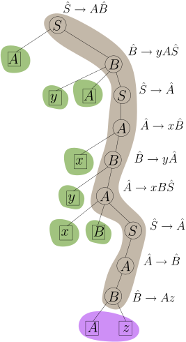
course1/public/img/context-free/LR/hat-G-derivation.svgDie oben gezeigten ./course1/wly/06/08-linker-Rand-und-Bluete.wly:216:5$\hat{G}$./course1/wly/06/08-linker-Rand-und-Bluete.wly:216:24-Produktionen./course1/wly/06/08-linker-Rand-und-Bluete.wly:216:33 sind./course1/wly/06/08-linker-Rand-und-Bluete.wly:216:33 ./course1/wly/06/08-linker-Rand-und-Bluete.wly:217:5verallgemeinert regulär./course1/wly/06/08-linker-Rand-und-Bluete.wly:217:6 und nicht im eigentlichen Sinne./course1/wly/06/08-linker-Rand-und-Bluete.wly:217:30 regulär, wie zum Beispiel die Produktion./course1/wly/06/08-linker-Rand-und-Bluete.wly:218:5 ./course1/wly/06/08-linker-Rand-und-Bluete.wly:219:5$\hat{B} \rightarrow yA \hat{S}$./course1/wly/06/08-linker-Rand-und-Bluete.wly:219:5,./course1/wly/06/08-linker-Rand-und-Bluete.wly:219:37 die auf der rechten./course1/wly/06/08-linker-Rand-und-Bluete.wly:219:37 Seite zwei Terminalsymbole hat (beachten Sie: ./course1/wly/06/08-linker-Rand-und-Bluete.wly:220:5$A$./course1/wly/06/08-linker-Rand-und-Bluete.wly:220:51 ist ein./course1/wly/06/08-linker-Rand-und-Bluete.wly:220:54 Terminal aus der Sicht von ./course1/wly/06/08-linker-Rand-und-Bluete.wly:221:5$\hat{G}$./course1/wly/06/08-linker-Rand-und-Bluete.wly:221:32)../course1/wly/06/08-linker-Rand-und-Bluete.wly:221:41 Wir schreiben./course1/wly/06/08-linker-Rand-und-Bluete.wly:221:41 ./course1/wly/06/08-linker-Rand-und-Bluete.wly:222:5$\hat{G}$./course1/wly/06/08-linker-Rand-und-Bluete.wly:222:5 um in eine reguläre Grammatik, indem wir./course1/wly/06/08-linker-Rand-und-Bluete.wly:222:14 Zwischen-Nichtterminale einführen; diese entsprechen dann./course1/wly/06/08-linker-Rand-und-Bluete.wly:223:5 auch den Zuständen des dazugehörigen nichtdeterministischen./course1/wly/06/08-linker-Rand-und-Bluete.wly:224:5 Automaten:./course1/wly/06/08-linker-Rand-und-Bluete.wly:225:5
Definition 6.8.4./course1/wly/06/08-linker-Rand-und-Bluete.wly:227:5 ./course1/wly/06/08-linker-Rand-und-Bluete.wly:227:5 Sei ./course1/wly/06/08-linker-Rand-und-Bluete.wly:228:9$G = (\Sigma, N, S, P)$./course1/wly/06/08-linker-Rand-und-Bluete.wly:228:13 eine kontextfreie Grammatik../course1/wly/06/08-linker-Rand-und-Bluete.wly:228:36 Die Front-Grammatik oder DK-Grammatik von ./course1/wly/06/08-linker-Rand-und-Bluete.wly:229:9$G$./course1/wly/06/08-linker-Rand-und-Bluete.wly:229:51 ist die./course1/wly/06/08-linker-Rand-und-Bluete.wly:229:54 ./course1/wly/06/08-linker-Rand-und-Bluete.wly:230:9erweitert reguläre./course1/wly/06/08-linker-Rand-und-Bluete.wly:230:10 Grammatik./course1/wly/06/08-linker-Rand-und-Bluete.wly:230:29 ./course1/wly/06/08-linker-Rand-und-Bluete.wly:231:9$\hat{G} = (\Sigma \cup N, \hat{N}, \hat{S}, \hat{P})$./course1/wly/06/08-linker-Rand-und-Bluete.wly:231:9 mit./course1/wly/06/08-linker-Rand-und-Bluete.wly:231:63 ./course1/wly/06/08-linker-Rand-und-Bluete.wly:232:9$\hat{N} := \{\hat{X} \ | \ X \in N\}$./course1/wly/06/08-linker-Rand-und-Bluete.wly:232:9,./course1/wly/06/08-linker-Rand-und-Bluete.wly:232:47 wobei ./course1/wly/06/08-linker-Rand-und-Bluete.wly:232:47$\hat{P}$./course1/wly/06/08-linker-Rand-und-Bluete.wly:232:55 ./course1/wly/06/08-linker-Rand-und-Bluete.wly:232:64 für jede ./course1/wly/06/08-linker-Rand-und-Bluete.wly:233:9$G$./course1/wly/06/08-linker-Rand-und-Bluete.wly:233:18-Produktion./course1/wly/06/08-linker-Rand-und-Bluete.wly:233:21
mit ./course1/wly/06/08-linker-Rand-und-Bluete.wly:239:9$w_i \in \Sigma^*$./course1/wly/06/08-linker-Rand-und-Bluete.wly:239:13 die Produktionen./course1/wly/06/08-linker-Rand-und-Bluete.wly:239:31
besitzt../course1/wly/06/08-linker-Rand-und-Bluete.wly:249:9
Beobachtung 6.8.5./course1/wly/06/08-linker-Rand-und-Bluete.wly:251:5 ./course1/wly/06/08-linker-Rand-und-Bluete.wly:251:5 ./course1/wly/06/08-linker-Rand-und-Bluete.wly:252:9$\hat{G}$./course1/wly/06/08-linker-Rand-und-Bluete.wly:252:9 erzeugt die Sprache ./course1/wly/06/08-linker-Rand-und-Bluete.wly:252:18$\Front(G)$./course1/wly/06/08-linker-Rand-und-Bluete.wly:252:39../course1/wly/06/08-linker-Rand-und-Bluete.wly:252:50
Beispiel 6.8.6./course1/wly/06/08-linker-Rand-und-Bluete.wly:254:5 ./course1/wly/06/08-linker-Rand-und-Bluete.wly:254:5 Für unsere Grammatik ./course1/wly/06/08-linker-Rand-und-Bluete.wly:255:9$G$./course1/wly/06/08-linker-Rand-und-Bluete.wly:255:30 oben ergeben sich folgende./course1/wly/06/08-linker-Rand-und-Bluete.wly:255:33 Produktionen ./course1/wly/06/08-linker-Rand-und-Bluete.wly:256:9$\hat{P}$./course1/wly/06/08-linker-Rand-und-Bluete.wly:256:22 in ./course1/wly/06/08-linker-Rand-und-Bluete.wly:256:31$\hat{G}$./course1/wly/06/08-linker-Rand-und-Bluete.wly:256:35:./course1/wly/06/08-linker-Rand-und-Bluete.wly:256:44
Nochmals: Produktionen wie./course1/wly/06/08-linker-Rand-und-Bluete.wly:287:5 ./course1/wly/06/08-linker-Rand-und-Bluete.wly:288:5$\dk{B} \rightarrow \dkt{y A} \dk{S}$./course1/wly/06/08-linker-Rand-und-Bluete.wly:288:5 sind erweitert./course1/wly/06/08-linker-Rand-und-Bluete.wly:288:42 regulär weil ./course1/wly/06/08-linker-Rand-und-Bluete.wly:289:5$\dkt{y}$./course1/wly/06/08-linker-Rand-und-Bluete.wly:289:18 und ./course1/wly/06/08-linker-Rand-und-Bluete.wly:289:27$\dkt{A}$./course1/wly/06/08-linker-Rand-und-Bluete.wly:289:32 aus Sicht von./course1/wly/06/08-linker-Rand-und-Bluete.wly:289:41 ./course1/wly/06/08-linker-Rand-und-Bluete.wly:290:5$\hat{G}$./course1/wly/06/08-linker-Rand-und-Bluete.wly:290:5 beides Terminalsymbole sind. Wir können nun./course1/wly/06/08-linker-Rand-und-Bluete.wly:290:14 unseren ./course1/wly/06/08-linker-Rand-und-Bluete.wly:291:5$LR(0)$./course1/wly/06/08-linker-Rand-und-Bluete.wly:291:13-Parser./course1/wly/06/08-linker-Rand-und-Bluete.wly:291:20 beschreiben:./course1/wly/06/08-linker-Rand-und-Bluete.wly:291:20
Algorithmus 6.8.7 - Der ./course1/wly/06/08-linker-Rand-und-Bluete.wly:293:5$LR(0)$./course1/wly/06/08-linker-Rand-und-Bluete.wly:295:16-Parser../course1/wly/06/08-linker-Rand-und-Bluete.wly:295:23 Starte mit einem leerem Stack. Sei./course1/wly/06/08-linker-Rand-und-Bluete.wly:295:32 ./course1/wly/06/08-linker-Rand-und-Bluete.wly:296:9$\gamma$./course1/wly/06/08-linker-Rand-und-Bluete.wly:296:9 der Inhalt des Stacks zu einem Zeitpunkt../course1/wly/06/08-linker-Rand-und-Bluete.wly:296:17
Wenn ./course1/wly/06/08-linker-Rand-und-Bluete.wly:300:17$\gamma \in \Front(G)$./course1/wly/06/08-linker-Rand-und-Bluete.wly:300:22,./course1/wly/06/08-linker-Rand-und-Bluete.wly:300:44 dann betrachte die letzte./course1/wly/06/08-linker-Rand-und-Bluete.wly:300:44 angewandte ./course1/wly/06/08-linker-Rand-und-Bluete.wly:301:17$\hat{G}$./course1/wly/06/08-linker-Rand-und-Bluete.wly:301:28 -Produktion./course1/wly/06/08-linker-Rand-und-Bluete.wly:301:37 ./course1/wly/06/08-linker-Rand-und-Bluete.wly:302:17$\hat{X} \rightarrow \beta$./course1/wly/06/08-linker-Rand-und-Bluete.wly:302:17 und schreibe./course1/wly/06/08-linker-Rand-und-Bluete.wly:302:44 ./course1/wly/06/08-linker-Rand-und-Bluete.wly:303:17$\gamma = \alpha\beta$./course1/wly/06/08-linker-Rand-und-Bluete.wly:303:17../course1/wly/06/08-linker-Rand-und-Bluete.wly:303:39 Wende die ./course1/wly/06/08-linker-Rand-und-Bluete.wly:303:39$G$./course1/wly/06/08-linker-Rand-und-Bluete.wly:303:51-Produktion./course1/wly/06/08-linker-Rand-und-Bluete.wly:303:54 ./course1/wly/06/08-linker-Rand-und-Bluete.wly:303:54 ./course1/wly/06/08-linker-Rand-und-Bluete.wly:304:17$X \rightarrow \beta$./course1/wly/06/08-linker-Rand-und-Bluete.wly:304:17 rückwärts an, reduziere also./course1/wly/06/08-linker-Rand-und-Bluete.wly:304:38
Konkret: lösche ./course1/wly/06/08-linker-Rand-und-Bluete.wly:310:17$\beta$./course1/wly/06/08-linker-Rand-und-Bluete.wly:310:33 vom Stack und ersetze es durch ./course1/wly/06/08-linker-Rand-und-Bluete.wly:310:40$A$./course1/wly/06/08-linker-Rand-und-Bluete.wly:310:72../course1/wly/06/08-linker-Rand-und-Bluete.wly:310:75
Falls ./course1/wly/06/08-linker-Rand-und-Bluete.wly:313:17$\gamma \not \in \Front(G)$./course1/wly/06/08-linker-Rand-und-Bluete.wly:313:23,./course1/wly/06/08-linker-Rand-und-Bluete.wly:313:50 lies das nächste./course1/wly/06/08-linker-Rand-und-Bluete.wly:313:50 Eingabezeichen und lege es auf den Stack../course1/wly/06/08-linker-Rand-und-Bluete.wly:314:17
Der Parser endet, wenn weder Schritt 1 noch Schritt 2./course1/wly/06/08-linker-Rand-und-Bluete.wly:316:9 möglich sind; wenn zu diesem Zeitpunkt nur noch ./course1/wly/06/08-linker-Rand-und-Bluete.wly:317:9$S$./course1/wly/06/08-linker-Rand-und-Bluete.wly:317:57 auf./course1/wly/06/08-linker-Rand-und-Bluete.wly:317:60 dem Stack liegt, akzeptiert er, andernfalls lehnt er das./course1/wly/06/08-linker-Rand-und-Bluete.wly:318:9 Eingabewort ab../course1/wly/06/08-linker-Rand-und-Bluete.wly:319:9
Theorem 6.8.8./course1/wly/06/08-linker-Rand-und-Bluete.wly:321:5 ./course1/wly/06/08-linker-Rand-und-Bluete.wly:321:5 Wenn der ./course1/wly/06/08-linker-Rand-und-Bluete.wly:322:9$LR(0)$./course1/wly/06/08-linker-Rand-und-Bluete.wly:322:18-Parser./course1/wly/06/08-linker-Rand-und-Bluete.wly:322:25 akzeptiert, dann hat er eine./course1/wly/06/08-linker-Rand-und-Bluete.wly:322:25 Linksreduktion ./course1/wly/06/08-linker-Rand-und-Bluete.wly:323:9$w \rstep{}^* S$./course1/wly/06/08-linker-Rand-und-Bluete.wly:323:24 und somit eine./course1/wly/06/08-linker-Rand-und-Bluete.wly:323:40 Rechtsableitung konstruiert; es gilt also ./course1/wly/06/08-linker-Rand-und-Bluete.wly:324:9$w \in L(G)$./course1/wly/06/08-linker-Rand-und-Bluete.wly:324:51../course1/wly/06/08-linker-Rand-und-Bluete.wly:324:63 ./course1/wly/06/08-linker-Rand-und-Bluete.wly:324:63 Wenn umgekehrt ./course1/wly/06/08-linker-Rand-und-Bluete.wly:325:9$w \in L(G)$./course1/wly/06/08-linker-Rand-und-Bluete.wly:325:24 gilt und ./course1/wly/06/08-linker-Rand-und-Bluete.wly:325:36$G$./course1/wly/06/08-linker-Rand-und-Bluete.wly:325:46 die./course1/wly/06/08-linker-Rand-und-Bluete.wly:325:49 ./course1/wly/06/08-linker-Rand-und-Bluete.wly:326:9$LR(0)$./course1/wly/06/08-linker-Rand-und-Bluete.wly:326:9-Bedingung./course1/wly/06/08-linker-Rand-und-Bluete.wly:326:16 erfüllt, dann findet der Parser die./course1/wly/06/08-linker-Rand-und-Bluete.wly:326:16 Rechtsableitung ./course1/wly/06/08-linker-Rand-und-Bluete.wly:327:9$S \Step{}^* w$./course1/wly/06/08-linker-Rand-und-Bluete.wly:327:25,./course1/wly/06/08-linker-Rand-und-Bluete.wly:327:40
Beweis Der erste Teil der Bedeutung ist einfach zu sehen. Jeder./course1/wly/06/08-linker-Rand-und-Bluete.wly:330:9 Reduktionsschritt ist ein Linksreduktionsschritt, und wenn./course1/wly/06/08-linker-Rand-und-Bluete.wly:331:9 man Ende ./course1/wly/06/08-linker-Rand-und-Bluete.wly:332:9$S$./course1/wly/06/08-linker-Rand-und-Bluete.wly:332:18 steht, waren es auch alles ./course1/wly/06/08-linker-Rand-und-Bluete.wly:332:21korrekte./course1/wly/06/08-linker-Rand-und-Bluete.wly:332:50 ./course1/wly/06/08-linker-Rand-und-Bluete.wly:332:59 Linksreduktionsschritte. Der zweite Teil ist schwieriger../course1/wly/06/08-linker-Rand-und-Bluete.wly:333:9 Wir nehmen also an, dass ./course1/wly/06/08-linker-Rand-und-Bluete.wly:334:9$G$./course1/wly/06/08-linker-Rand-und-Bluete.wly:334:34 eine LR(0)-Grammatik ist. Da./course1/wly/06/08-linker-Rand-und-Bluete.wly:334:37 ./course1/wly/06/08-linker-Rand-und-Bluete.wly:335:9$G$./course1/wly/06/08-linker-Rand-und-Bluete.wly:335:9 eindeutig ist, hat jede gültige Wortform ./course1/wly/06/08-linker-Rand-und-Bluete.wly:335:12$\gamma$./course1/wly/06/08-linker-Rand-und-Bluete.wly:335:54 eine./course1/wly/06/08-linker-Rand-und-Bluete.wly:335:62 eindeutige Rechtsableitung und einen dazugehörigen./course1/wly/06/08-linker-Rand-und-Bluete.wly:336:9 Ableitungsbaum ./course1/wly/06/08-linker-Rand-und-Bluete.wly:337:9$\mathcal{T}$./course1/wly/06/08-linker-Rand-und-Bluete.wly:337:24;./course1/wly/06/08-linker-Rand-und-Bluete.wly:337:37 somit ist./course1/wly/06/08-linker-Rand-und-Bluete.wly:337:37 ./course1/wly/06/08-linker-Rand-und-Bluete.wly:338:9$\front(\gamma) := \front(\mathcal{T})$./course1/wly/06/08-linker-Rand-und-Bluete.wly:338:9 eindeutig./course1/wly/06/08-linker-Rand-und-Bluete.wly:338:48 bestimmt. Beachten Sie, dass rechts von ./course1/wly/06/08-linker-Rand-und-Bluete.wly:339:9$\front(\gamma)$./course1/wly/06/08-linker-Rand-und-Bluete.wly:339:49 ./course1/wly/06/08-linker-Rand-und-Bluete.wly:339:65 nur Terminalsymbole folgen. Betrachten wir einen Zeitpunkt./course1/wly/06/08-linker-Rand-und-Bluete.wly:340:9 während des Parsing-Prozesses. Sei ./course1/wly/06/08-linker-Rand-und-Bluete.wly:341:9$\gamma$./course1/wly/06/08-linker-Rand-und-Bluete.wly:341:44 der./course1/wly/06/08-linker-Rand-und-Bluete.wly:341:52 Stackinhalt und ./course1/wly/06/08-linker-Rand-und-Bluete.wly:342:9$w$./course1/wly/06/08-linker-Rand-und-Bluete.wly:342:25 der ungelesene Teil des Eingabewortes../course1/wly/06/08-linker-Rand-und-Bluete.wly:342:28 Wir werden beweisen, dass zu jedem Zeitpunkt folgende./course1/wly/06/08-linker-Rand-und-Bluete.wly:343:9 Invariante gilt:./course1/wly/06/08-linker-Rand-und-Bluete.wly:344:9
Behauptung../course1/wly/06/08-linker-Rand-und-Bluete.wly:346:10 (i) ./course1/wly/06/08-linker-Rand-und-Bluete.wly:346:22$\gamma w$./course1/wly/06/08-linker-Rand-und-Bluete.wly:346:27 ist eine gültige Wortform../course1/wly/06/08-linker-Rand-und-Bluete.wly:346:37 (ii) ./course1/wly/06/08-linker-Rand-und-Bluete.wly:347:9$\gamma$./course1/wly/06/08-linker-Rand-und-Bluete.wly:347:14 ist ein Präfix von ./course1/wly/06/08-linker-Rand-und-Bluete.wly:347:22$\front(\gamma w)$./course1/wly/06/08-linker-Rand-und-Bluete.wly:347:42../course1/wly/06/08-linker-Rand-und-Bluete.wly:347:60
Beweis../course1/wly/06/08-linker-Rand-und-Bluete.wly:349:10 Die Behauptung gilt offensichtlich am Anfang, da./course1/wly/06/08-linker-Rand-und-Bluete.wly:349:18 ./course1/wly/06/08-linker-Rand-und-Bluete.wly:350:9$\gamma = \epsilon$./course1/wly/06/08-linker-Rand-und-Bluete.wly:350:9 und ./course1/wly/06/08-linker-Rand-und-Bluete.wly:350:28$w\in L$./course1/wly/06/08-linker-Rand-und-Bluete.wly:350:33 ist und somit./course1/wly/06/08-linker-Rand-und-Bluete.wly:350:41 ./course1/wly/06/08-linker-Rand-und-Bluete.wly:351:9$\gamma w = w$./course1/wly/06/08-linker-Rand-und-Bluete.wly:351:9 eine gültige Wortform ist. Des weiteren ist./course1/wly/06/08-linker-Rand-und-Bluete.wly:351:23 der Stack leer, also ./course1/wly/06/08-linker-Rand-und-Bluete.wly:352:9$\gamma = \epsilon$./course1/wly/06/08-linker-Rand-und-Bluete.wly:352:30,./course1/wly/06/08-linker-Rand-und-Bluete.wly:352:49 und daher./course1/wly/06/08-linker-Rand-und-Bluete.wly:352:49 sicherlich ein Präfix von ./course1/wly/06/08-linker-Rand-und-Bluete.wly:353:9$\front(w)$./course1/wly/06/08-linker-Rand-und-Bluete.wly:353:35../course1/wly/06/08-linker-Rand-und-Bluete.wly:353:46 Wir zeigen nun,./course1/wly/06/08-linker-Rand-und-Bluete.wly:353:46 dass, wenn die Invariante in Schritt ./course1/wly/06/08-linker-Rand-und-Bluete.wly:354:9$t$./course1/wly/06/08-linker-Rand-und-Bluete.wly:354:46 gilt, sie auch im./course1/wly/06/08-linker-Rand-und-Bluete.wly:354:49 nächsten Schritt ./course1/wly/06/08-linker-Rand-und-Bluete.wly:355:9$t+1$./course1/wly/06/08-linker-Rand-und-Bluete.wly:355:26 gilt. Es gibt nun zwei./course1/wly/06/08-linker-Rand-und-Bluete.wly:355:31 Möglichkeiten../course1/wly/06/08-linker-Rand-und-Bluete.wly:356:9
Der Parser wendet Schritt 1 an, also./course1/wly/06/08-linker-Rand-und-Bluete.wly:360:17 ./course1/wly/06/08-linker-Rand-und-Bluete.wly:361:17$\gamma \in \Front(G)$./course1/wly/06/08-linker-Rand-und-Bluete.wly:361:17../course1/wly/06/08-linker-Rand-und-Bluete.wly:361:39 Das heißt nach Definition von./course1/wly/06/08-linker-Rand-und-Bluete.wly:361:39 ./course1/wly/06/08-linker-Rand-und-Bluete.wly:362:17$\Front(G)$./course1/wly/06/08-linker-Rand-und-Bluete.wly:362:17,./course1/wly/06/08-linker-Rand-und-Bluete.wly:362:28 dass es ein ./course1/wly/06/08-linker-Rand-und-Bluete.wly:362:28$w' \in \Sigma^*$./course1/wly/06/08-linker-Rand-und-Bluete.wly:362:42 gibt, so dass./course1/wly/06/08-linker-Rand-und-Bluete.wly:362:59 ./course1/wly/06/08-linker-Rand-und-Bluete.wly:363:17$\gamma w'$./course1/wly/06/08-linker-Rand-und-Bluete.wly:363:17 eine gültige Wortform ist und./course1/wly/06/08-linker-Rand-und-Bluete.wly:363:28 ./course1/wly/06/08-linker-Rand-und-Bluete.wly:364:17$\gamma = \front(\gamma w')$./course1/wly/06/08-linker-Rand-und-Bluete.wly:364:17../course1/wly/06/08-linker-Rand-und-Bluete.wly:364:45 Also./course1/wly/06/08-linker-Rand-und-Bluete.wly:364:45
mit ./course1/wly/06/08-linker-Rand-und-Bluete.wly:370:17$\gamma = \alpha \beta$./course1/wly/06/08-linker-Rand-und-Bluete.wly:370:21../course1/wly/06/08-linker-Rand-und-Bluete.wly:370:44 Es sind ./course1/wly/06/08-linker-Rand-und-Bluete.wly:370:44$\alpha$./course1/wly/06/08-linker-Rand-und-Bluete.wly:370:54 und ./course1/wly/06/08-linker-Rand-und-Bluete.wly:370:62$\beta$./course1/wly/06/08-linker-Rand-und-Bluete.wly:370:67 ./course1/wly/06/08-linker-Rand-und-Bluete.wly:370:74 also linker Rand und Blüte von ./course1/wly/06/08-linker-Rand-und-Bluete.wly:371:17$\gamma w'$./course1/wly/06/08-linker-Rand-und-Bluete.wly:371:48../course1/wly/06/08-linker-Rand-und-Bluete.wly:371:59 Somit ist./course1/wly/06/08-linker-Rand-und-Bluete.wly:371:59
ein korrekter Linksreduktionsschritt. Die letzte./course1/wly/06/08-linker-Rand-und-Bluete.wly:378:17 ./course1/wly/06/08-linker-Rand-und-Bluete.wly:379:17$\dk{G}$./course1/wly/06/08-linker-Rand-und-Bluete.wly:379:17-Produktion./course1/wly/06/08-linker-Rand-und-Bluete.wly:379:25 in der Ableitung von./course1/wly/06/08-linker-Rand-und-Bluete.wly:379:25 ./course1/wly/06/08-linker-Rand-und-Bluete.wly:380:17$\dk{S} \Step{}^* \gamma$./course1/wly/06/08-linker-Rand-und-Bluete.wly:380:17 war somit./course1/wly/06/08-linker-Rand-und-Bluete.wly:380:42 ./course1/wly/06/08-linker-Rand-und-Bluete.wly:381:17$\dk{A} \rightarrow \beta$./course1/wly/06/08-linker-Rand-und-Bluete.wly:381:17;./course1/wly/06/08-linker-Rand-und-Bluete.wly:381:43 somit ersetzt der Parser das./course1/wly/06/08-linker-Rand-und-Bluete.wly:381:43 ./course1/wly/06/08-linker-Rand-und-Bluete.wly:382:17$\beta$./course1/wly/06/08-linker-Rand-und-Bluete.wly:382:17 auf dem Stack durch ./course1/wly/06/08-linker-Rand-und-Bluete.wly:382:24$A$./course1/wly/06/08-linker-Rand-und-Bluete.wly:382:45;./course1/wly/06/08-linker-Rand-und-Bluete.wly:382:48 führt also die./course1/wly/06/08-linker-Rand-und-Bluete.wly:382:48 Linksreduktion./course1/wly/06/08-linker-Rand-und-Bluete.wly:383:17
an. Da (./course1/wly/06/08-linker-Rand-und-Bluete.wly:390:177./course1/wly/06/08-linker-Rand-und-Bluete.wly:390:17) korrekt ist und./course1/wly/06/08-linker-Rand-und-Bluete.wly:390:17 ./course1/wly/06/08-linker-Rand-und-Bluete.wly:391:17$\alpha \beta w$./course1/wly/06/08-linker-Rand-und-Bluete.wly:391:17 nach Invariante eine gültige Wortform./course1/wly/06/08-linker-Rand-und-Bluete.wly:391:33 ist, ist nach (LR0)-Bedingung auch (./course1/wly/06/08-linker-Rand-und-Bluete.wly:392:178./course1/wly/06/08-linker-Rand-und-Bluete.wly:392:17)./course1/wly/06/08-linker-Rand-und-Bluete.wly:392:17 ein korrekter Schritt; ./course1/wly/06/08-linker-Rand-und-Bluete.wly:393:17$\alpha Aw$./course1/wly/06/08-linker-Rand-und-Bluete.wly:393:40 ist also auch eine./course1/wly/06/08-linker-Rand-und-Bluete.wly:393:51 gültige Wortform; somit gilt Teil (i) der Invariante. Um zu./course1/wly/06/08-linker-Rand-und-Bluete.wly:394:17 sehen, dass (ii) gilt, beachten Sie, dass nun auf dem Stack./course1/wly/06/08-linker-Rand-und-Bluete.wly:395:17 oben ein Nichtterminal liegt: ./course1/wly/06/08-linker-Rand-und-Bluete.wly:396:17$A$./course1/wly/06/08-linker-Rand-und-Bluete.wly:396:47;./course1/wly/06/08-linker-Rand-und-Bluete.wly:396:50 da rechts vom aktiven./course1/wly/06/08-linker-Rand-und-Bluete.wly:396:50 Teil nur Terminale stehen, muss ./course1/wly/06/08-linker-Rand-und-Bluete.wly:397:17$\alpha A$./course1/wly/06/08-linker-Rand-und-Bluete.wly:397:49 ein Präfix von./course1/wly/06/08-linker-Rand-und-Bluete.wly:397:59 ./course1/wly/06/08-linker-Rand-und-Bluete.wly:398:17$\front(\alpha A w)$./course1/wly/06/08-linker-Rand-und-Bluete.wly:398:17 sein../course1/wly/06/08-linker-Rand-und-Bluete.wly:398:37
Der Parser wendet Schritt 2 an, also ./course1/wly/06/08-linker-Rand-und-Bluete.wly:401:17$w = cw'$./course1/wly/06/08-linker-Rand-und-Bluete.wly:401:54,./course1/wly/06/08-linker-Rand-und-Bluete.wly:401:63 er liest./course1/wly/06/08-linker-Rand-und-Bluete.wly:401:63 ./course1/wly/06/08-linker-Rand-und-Bluete.wly:402:17$c$./course1/wly/06/08-linker-Rand-und-Bluete.wly:402:17 und legt es auf den Stack. Im nächsten Schritt ist der./course1/wly/06/08-linker-Rand-und-Bluete.wly:402:20 Stackinhalt ./course1/wly/06/08-linker-Rand-und-Bluete.wly:403:17$\gamma' := \gamma c$./course1/wly/06/08-linker-Rand-und-Bluete.wly:403:29 und das ungelesene Wort./course1/wly/06/08-linker-Rand-und-Bluete.wly:403:50 ist ./course1/wly/06/08-linker-Rand-und-Bluete.wly:404:17$w'$./course1/wly/06/08-linker-Rand-und-Bluete.wly:404:21../course1/wly/06/08-linker-Rand-und-Bluete.wly:404:25 Teil (i) der Behauptung gilt offensichtlich, da./course1/wly/06/08-linker-Rand-und-Bluete.wly:404:25 ./course1/wly/06/08-linker-Rand-und-Bluete.wly:405:17$\gamma' w' = \gamma w$./course1/wly/06/08-linker-Rand-und-Bluete.wly:405:17 und somit immer noch eine gültige./course1/wly/06/08-linker-Rand-und-Bluete.wly:405:40 Wortform ist. Um zu sehen, dass Teil (ii) gilt, beachten./course1/wly/06/08-linker-Rand-und-Bluete.wly:406:17 Sie erstens, dass Teil (ii) vor dem Schritt galt, also./course1/wly/06/08-linker-Rand-und-Bluete.wly:407:17 ./course1/wly/06/08-linker-Rand-und-Bluete.wly:408:17$\gamma$./course1/wly/06/08-linker-Rand-und-Bluete.wly:408:17 ein Präfix von ./course1/wly/06/08-linker-Rand-und-Bluete.wly:408:25$\front(\gamma w)$./course1/wly/06/08-linker-Rand-und-Bluete.wly:408:41 ist; zweitens,./course1/wly/06/08-linker-Rand-und-Bluete.wly:408:59 dass ./course1/wly/06/08-linker-Rand-und-Bluete.wly:409:17$\gamma \not \in \Front(G)$./course1/wly/06/08-linker-Rand-und-Bluete.wly:409:22 ist (sonst hätte der./course1/wly/06/08-linker-Rand-und-Bluete.wly:409:49 Parser Schritt 1 angewandt); somit ist ./course1/wly/06/08-linker-Rand-und-Bluete.wly:410:17$\gamma$./course1/wly/06/08-linker-Rand-und-Bluete.wly:410:56 ein./course1/wly/06/08-linker-Rand-und-Bluete.wly:410:64 ./course1/wly/06/08-linker-Rand-und-Bluete.wly:411:17echter./course1/wly/06/08-linker-Rand-und-Bluete.wly:411:18 Präfix von ./course1/wly/06/08-linker-Rand-und-Bluete.wly:411:25$\front(\gamma w)$./course1/wly/06/08-linker-Rand-und-Bluete.wly:411:37 und somit ist./course1/wly/06/08-linker-Rand-und-Bluete.wly:411:55 ./course1/wly/06/08-linker-Rand-und-Bluete.wly:412:17$\gamma c$./course1/wly/06/08-linker-Rand-und-Bluete.wly:412:17 immer noch ein Präfix von ./course1/wly/06/08-linker-Rand-und-Bluete.wly:412:27$\front(\gamma w)$./course1/wly/06/08-linker-Rand-und-Bluete.wly:412:54../course1/wly/06/08-linker-Rand-und-Bluete.wly:412:72
Wenn das Eingabewort gelesen ist, ist nun ./course1/wly/06/08-linker-Rand-und-Bluete.wly:414:9$w = \epsilon$./course1/wly/06/08-linker-Rand-und-Bluete.wly:414:51 ./course1/wly/06/08-linker-Rand-und-Bluete.wly:414:65 und Stackinhalt ./course1/wly/06/08-linker-Rand-und-Bluete.wly:415:9$\gamma$./course1/wly/06/08-linker-Rand-und-Bluete.wly:415:25 ist selbst eine gültige Wortform,./course1/wly/06/08-linker-Rand-und-Bluete.wly:415:33 die allerdings nicht weiter reduziert werden kann. Also./course1/wly/06/08-linker-Rand-und-Bluete.wly:416:9 muss ./course1/wly/06/08-linker-Rand-und-Bluete.wly:417:9$\gamma = S$./course1/wly/06/08-linker-Rand-und-Bluete.wly:417:14 gelten und der Parser akzeptiert../course1/wly/06/08-linker-Rand-und-Bluete.wly:417:26A\(\square\)